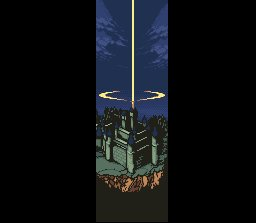

Castlevania : Dracula X
- Menu -
- System - Stage - Secret - Ending
Ending

Ending A หากปราบ Dracula โดยไม่สามารถช่วย Maria และ Anette ได้
Ending B หากปราบ Dracula โดยช่วย Maria ได้เพียงคนเดียว
Ending C หากปราบ Dracula โดย่สามารถช่วยได้ทั้ง Maria และ Anette
Thanks Gamefaqs